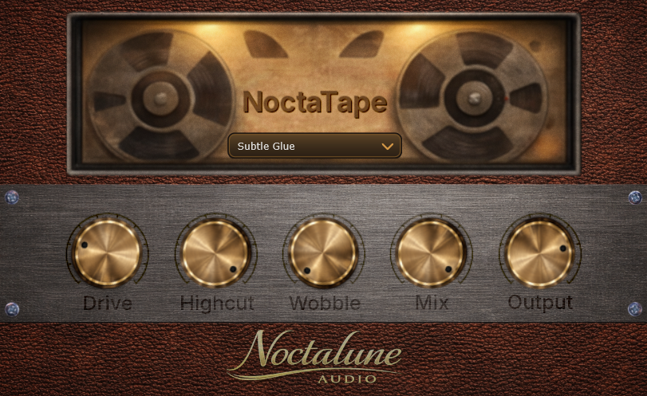

Analog-style saturation
Add rounded harmonics and gentle density that help drums, keys, guitars, and buses sit with more depth.
Boutique Tape Character For Modern Production
Add subtle saturation, wobble and character to your sound - inspired by vintage tape machines.
NoctaTape plugin screenshot

What It Brings To A Mix
NoctaTape is shaped for producers who want softness, movement, and detail without fighting a crowded interface.
Add rounded harmonics and gentle density that help drums, keys, guitars, and buses sit with more depth.
Introduce movement and subtle instability for nostalgic pitch drift, softened transients, and human feel.
Dial in tone quickly with an interface designed to support fast decisions and easy experimentation.
Built with intimate production styles in mind, from tape-soft vocals to hazy pads and worn melodic loops.
Audio Demos
Compare untreated guitar and vocal signals with their NoctaTape-processed versions directly on the page.
Before
Clean guitar signal without additional NoctaTape processing.
After NoctaTape
Guitar processed with NoctaTape for added warmth, motion, and worn deck character.
Before Vocals
Clean vocal signal before any NoctaTape coloration or tape-style degradation.
After Vocals
Vocals treated with NoctaTape for a broken portastudio feel, softened edges, and worn movement.
Early Access
Collect signups for release news, demo drops, and future Noctalune Audio updates.
About The Brand
We make audio software for producers chasing warmth, softness, and character in modern sessions. The goal is not to overwhelm a workflow, but to offer a few musical controls that make a track feel more human.
NoctaTape is part of that idea: a focused tape color tool for artists working in LoFi, indie, ambient, and other texture-driven styles.